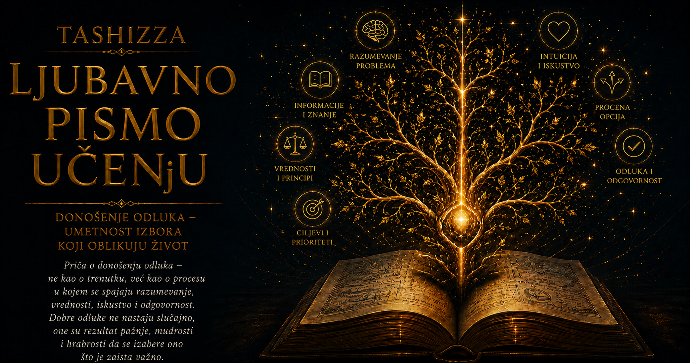

Ljubavno pismo učenju

Odluka se često prikazuje kao trenutak u kojem čovek zastane pred nekoliko mogućnosti, razmotri njihove prednosti i izabere onu koja mu najviše odgovara. Stvarni život mnogo je složeniji, jer retko odlučujemo u praznom prostoru, sa potpunim informacijama i neograničenim vremenom. Naše mogućnosti zavise od postupaka drugih ljudi, od poverenja koje smo izgradili ili izgubili, od načina na koji raspoređujemo pažnju i od granica koje postavljamo sopstvenom radu. Zbog toga se četiri prethodne priče — o Džonu Nešu, zatvorenikovoj dilemi, Paretovom načelu i Parkinsonovom zakonu — mogu čitati kao delovi jedne zajedničke mape razumnog odlučivanja.
Svaka od tih ideja osvetljava drugo pitanje. Neš nas uči da predvidimo kako će drugi odgovoriti na naš izbor. Zatvorenikova dilema pokazuje zbog čega pojedinačno razboriti ljudi ponekad zajednički proizvode štetan ishod. Pareto usmerava pažnju prema malom broju činilaca koji nose najveći deo uticaja, dok Parkinson otkriva kako zadaci, rokovi i organizacije mogu da se šire sve dok ne potroše raspoloživo vreme i energiju. Tek kada ih povežemo, dobijamo dovoljno širok okvir da istovremeno razmišljamo o ljudima, pravilima, prioritetima i ograničenjima.
Nešova ravnoteža započinje promenom perspektive. Umesto pitanja šta ja želim i koji mi potez donosi najveću korist, pred nas postavlja složeniji zadatak: kako će moj izbor promeniti okolnosti u kojima će drugi odlučivati i kakav će odgovor njima izgledati razuman? Pregovor o plati, porodična podela obaveza, poslovna saradnja, određivanje cene proizvoda ili međunarodni sporazum ne zavise samo od kvaliteta našeg plana. Njihov ishod nastaje iz susreta više planova, interesa i očekivanja koja se uzajamno oblikuju.
Takvo strateško razmišljanje ne podrazumeva hladnu proračunatost niti pretvaranje svakog odnosa u nadmetanje. Ono zahteva sposobnost da sopstvenu odluku vidimo očima ljudi na koje će ona uticati. Čovek koji želi saradnju mora razmotriti da li je njegov predlog drugoj strani razumljiv, prihvatljiv i dovoljno pouzdan. Rukovodilac koji traži otvorenost mora proveriti da li radno okruženje zaista nagrađuje iskreno prijavljivanje problema. Roditelj koji želi odgovornost deteta treba da razmisli da li mu ostavlja prostor za samostalno odlučivanje ili svaku grešku pretvara u povod za strožu kontrolu. Naše namere imaju ograničenu snagu ukoliko pravila i posledice podstiču sasvim drugačije ponašanje.
Nešova ideja donosi i važnu opomenu: stabilno stanje može dugo opstajati iako je nepovoljno za gotovo sve učesnike. Zaposleni mogu ćutati o lošem postupku zato što niko ne želi prvi da se izloži. Članovi porodice mogu izbegavati težak razgovor, očekujući da druga strana napravi početni korak. Kompanije mogu ulagati ogromna sredstva u međusobno nadmetanje od kojeg nijedna nema trajnu korist, ali svaka strahuje da bi je jednostrano povlačenje oslabilo. Stabilnost takvog poretka potiče iz uzajamnih očekivanja, pa njegovo poboljšanje često zahteva dogovorenu promenu ponašanja ili preuređenje samih pravila.
Zatvorenikova dilema produbljuje ovaj uvid pokazujući kako nepoverenje može pretvoriti razumnu predostrožnost u zajednički gubitak. Kada dve strane imaju mogućnost da sarađuju, svaka se istovremeno suočava sa opasnošću da njena otvorenost bude iskorišćena. Pokušavajući da se zaštite od izdaje, obe mogu izabrati zatvorenost, prikrivanje ili napad, iako bi im uzajamna saradnja donela povoljniji ishod. Loš rezultat tada ne potiče nužno iz loših namera, već iz odnosa u kojem nijedan učesnik nema dovoljno sigurnosti da načini prvi korak.
Ovaj obrazac lako prepoznajemo u radnoj sredini u kojoj kolege čuvaju znanje kako bi sačuvale ličnu prednost. Svako kratkoročno može delovati zaštićenije, ali tim vremenom postaje sporiji, ranjiviji i zavisan od pojedinaca koji jedini poznaju određeni deo posla. Kada nastane ozbiljan problem, nedostatak razmene znanja pretvara se u zajedničku slabost. Suprotan proces započinje kada ljudi dokumentuju ono što su naučili, objašnjavaju postupke jedni drugima i znaju da tuđa stručnost neće umanjiti njihovu vrednost. Tada saradnja povećava sposobnost svakog pojedinca, a zajednica postaje bogatija od prostog zbira svojih članova.
Poverenje se, međutim, ne može zasnivati samo na dobroj volji. Ono sazreva kroz ponovljeno iskustvo, proverljive obaveze, jasne granice i mogućnost da se greška prizna i ispravi. Zajednica koja ništa ne pamti lako postaje plen zloupotrebe, dok zajednica koja ništa ne oprašta ostaje zarobljena u beskrajnom uzvraćanju. Razumna saradnja spaja otvorenost sa odgovornošću: pruža priliku za poverenje, prepoznaje kršenje dogovora i ostavlja put kojim se narušeni odnos može obnoviti.
Kada Nešovu ravnotežu i zatvorenikovu dilemu posmatramo zajedno, postaje jasno da kvalitet odluke zavisi i od arhitekture odnosa. Ponekad uzalud pozivamo ljude da budu savesniji, hrabriji ili velikodušniji dok ih postojeći sistem kažnjava upravo zbog takvog ponašanja. Ako se u ustanovi greške skrivaju, potrebno je istražiti da li njihovo prijavljivanje vodi učenju ili poniženju. Ako članovi tima izbegavaju odgovornost, treba proveriti da li imaju ovlašćenja da utiču na rezultat. Ako ljudi ne dele znanje, važno je razumeti da li se priznanje dodeljuje saradnicima ili samo onome ko je sačuvao nadmoć. Mudra odluka stoga obuhvata i procenu pravila koja određuju šta se ljudima isplati, čega se plaše i kakvo ponašanje smatraju bezbednim.
U složenom sistemu ipak ne možemo jednaku pažnju posvetiti svemu. Tu se pojavljuje Paretov uvid da su posledice često raspoređene izrazito neravnomerno. Nekoliko uzroka može stvarati najveći deo problema, mali broj odluka može određivati uspeh čitavog projekta, a nekoliko svakodnevnih navika snažno oblikovati godine nečijeg života. Razumno odlučivanje zato zahteva da iza mnoštva zahteva pronađemo tačke najvećeg uticaja i razlikujemo ono što je samo glasno od onoga što zaista menja celinu.
U poslovnom sistemu možda desetine sitnih neprijatnosti privlače pažnju, dok se najveći gubici neprestano vraćaju iz dva loše uređena procesa. U učenju učenik može ulagati mnogo vremena u prepisivanje, ukrašavanje beležaka i ponovno čitanje, dok bi mu razumevanje nekoliko temeljnih pojmova otvorilo čitavu oblast. U međuljudskom odnosu mnoštvo manjih rasprava ponekad potiče iz jednog neizgovorenog straha ili nepravedne podele odgovornosti. Paretov pogled nas podstiče da ne popravljamo samo posledice koje su najvidljivije, već da tragamo za mestima na kojima pažljivo izabrana promena može preobraziti veći deo sistema.
Ipak, određivanje prioriteta zahteva više od mehaničkog ponavljanja odnosa osamdeset prema dvadeset. Stvarna raspodela može biti drugačija, a ono što se retko događa može nositi izuzetno teške posledice. Bezbednosni propust koji se pojavio samo jednom može ugroziti čitavu organizaciju; retka bolest ostaje presudna za čoveka koji od nje boluje; učenik čije poteškoće ne pripadaju većinskom obrascu i dalje zaslužuje pažnju i podršku. Pareto pomaže da utvrdimo gde se nalazi najveći deo merljivog uticaja, dok ljudske vrednosti, odgovornost i razumevanje posledica određuju šta ni pod kojim uslovima ne smemo zanemariti.
Četvrtu dimenziju odluke otvara Parkinsonov zakon. Čak i kada razumemo druge učesnike, izgradimo uslove za saradnju i pravilno odredimo prioritete, naš poduhvat može izgubiti oblik ako mu ne postavimo jasne granice. Posao lako prisvaja sve vreme koje mu ponudimo, a zatim u taj prostor uvodi dodatne provere, sastanke, dorade i zahteve. Čovek može iskreno provesti čitav dan radeći, a da se jedva približi rezultatu, jer je zadatak neprimetno proširen tako da održava zauzetost umesto da ostvaruje svrhu.
Parkinsonov uvid posebno je važan kada se poveže sa Paretovim načelom. Prvi nas pita koliko prostora dopuštamo poslu da zauzme, dok drugi ispituje koji deo tog posla najviše utiče na ishod. Zajedno nas vode prema odluci da najpre prepoznamo presudne zadatke, odredimo šta znači da su završeni i zaštitimo vreme potrebno za njihovo kvalitetno izvršenje. Bez Paretovog usmerenja možemo brzo završavati sporedne poslove; bez Parkinsonovih granica možemo beskrajno usavršavati najvažniji zadatak i nikada ga ne privesti kraju.
Ova integracija naročito je dragocena u učenju. Učenik najpre treba da prepozna temeljne ideje koje nose razumevanje oblasti, zatim da odredi jasan i dostižan korak, a potom da svoje znanje proveri objašnjavanjem, rešavanjem problema i povratnom informacijom. Ako uči sa drugima, ulazi i u prostor Nešovih uzajamnih očekivanja i zatvorenikove dileme: može skrivati znanje iz straha da će drugi napredovati brže ili ga deliti, gradeći okruženje u kojem pitanja, greške i objašnjenja povećavaju sposobnost čitave grupe. Kada pravila podstiču saradnju, tuđi napredak prestaje da izgleda kao lični gubitak i postaje novi izvor zajedničkog znanja.
Zamislimo tim koji razvija složen digitalni sistem. Programeri, korisnici, rukovodioci i stručnjaci za bezbednost imaju različite interese, informacije i predstave o uspehu. Nešov pogled pomaže da se predvide njihove reakcije na rokove, nagrade i promene zahteva. Zatvorenikova dilema upozorava da će prikrivanje grešaka i čuvanje znanja proizvesti zajedničku ranjivost. Pareto analiza otkriva komponente koje izazivaju najveći broj kvarova ili funkcije koje korisnicima donose najveću vrednost. Parkinsonov zakon zahteva jasan obim projekta i precizne uslove završetka, kako razvoj ne bi prerastao u beskrajno dodavanje mogućnosti koje udaljava proizvod od njegove osnovne namene.
Isti okvir može se primeniti na porodicu, školu, ustanovu ili čitavo društvo. Najpre treba razumeti ko učestvuje, šta želi, čega se plaši i kakve odgovore očekuje od drugih. Zatim treba prepoznati gde nedostatak poverenja navodi ljude da biraju ponašanje koje svima nanosi štetu. Posle toga pažnju usmeravamo na nekoliko uzroka sa najvećim dometom i određujemo granice rada, odgovornosti i vremena. Tako odluka prestaje da bude usamljeni čin volje i postaje promišljeno oblikovanje uslova u kojima ljudi mogu da sarađuju, uče i završavaju ono što su započeli.
Logika u tom procesu uređuje odnose između mogućnosti i posledica, intuicija prepoznaje obrasce koje smo dugo susretali, a iskustvo nas podseća na okolnosti koje nijedan pojednostavljen model ne može potpuno obuhvatiti. Međutim, intuicija je pouzdanija u poznatom okruženju sa jasnom povratnom informacijom, dok u novim i nepredvidivim situacijama zahteva proveru podacima i razgovor sa ljudima koji vide drugačiji deo problema. Iskustvo takođe može biti izvor mudrosti ili zatvor navike, u zavisnosti od toga da li iz prošlosti izvlačimo prenosive uvide ili samo ponavljamo rešenje koje je jednom uspelo.
Dobra odluka stoga ne može biti procenjena samo prema konačnom ishodu. Promišljen izbor ponekad će zbog nepredvidivih okolnosti završiti nepovoljno, dok neodgovoran potez može slučajno doneti dobit. Kvalitet odlučivanja prepoznaje se u jasnoći pitanja, razumevanju učesnika, pouzdanosti podataka, razmeri mogućih posledica, pažljivo postavljenim prioritetima i spremnosti da se odluka koriguje kada se promene njene početne pretpostavke. Odgovornost podrazumeva da učimo i iz uspeha i iz neuspeha, jer oba mogu prikriti pogrešne zaključke ako posmatramo samo rezultat.
Najdublja zajednička poruka ove četiri ideje glasi da se mudar izbor ne rađa iz jedne formule. Potrebno je videti mrežu uzajamnih reakcija koju je opisao Neš, prepoznati zamke nepoverenja koje otkriva zatvorenikova dilema, pronaći neravnomernu raspodelu uticaja na koju ukazuje Pareto i sačuvati svrhu rada od širenja koje je uočio Parkinson. Njihova integracija pretvara odlučivanje u disciplinu pažnje: prema ljudima čiji izbori utiču na nas, prema pravilima koja oblikuju naše ponašanje, prema uzrocima koji nose najveće posledice i prema vremenu koje svojim granicama dobija smisao.
Život se na kraju oblikuje upravo kroz takve odluke. Njega ne određuju samo velike raskrsnice koje pamtimo, već i svakodnevni izbori koji se neprimetno sabiraju: da li ćemo znanje zadržati ili podeliti, hoćemo li održavati lošu ravnotežu ili pokušati da promenimo pravila, da li ćemo pažnju rasuti na mnoštvo sitnica ili je usmeriti prema onome što snažno utiče na celinu, i da li ćemo vremenu dozvoliti da se ispuni zauzetošću ili ćemo ga urediti prema svrsi. U tim izborima učenje postaje više od prikupljanja znanja — postaje sposobnost da jasnije razumemo svet, odgovornije učestvujemo u njemu i zajedno sa drugima stvaramo povoljnije mogućnosti.